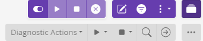

Get Started
- Go to the XComponent AppControl website.
- Log in using a social provider
- You're done! You can now get started with AppControl
In the example section, copy the following link to the demo application: demo application.
On the AppControl website, go to the Import Application and paste the link of the demo application.
Follow the wizard (clicking on 'Next' button). In the 'Gateway' tab select 'X4B SaaS'. On the last tab click on 'Import'.

Go the 'Overview', and select the helloworld application by clicking on the checkbox.
Then click on the load button.

Next, click on the 'Architecture' button:

Using, the command bar, you can now start/stop the Hello World application with ease. 